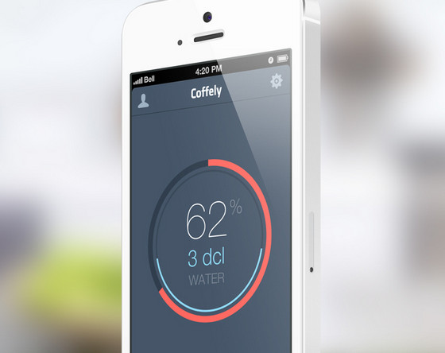

圆形风格的移动应用实例

圆形被认为是能够被人眼最快识别出的对象之一。这就意味着我们的大脑有能力处理在圆形中的信息比处理在常规的三角或矩形中的数据略快一些。对于小型的以手势为基础的交互界面中，这种能力真的非常关键。这一点对移动设备来说尤为典型，在大多数的情况下，这成为了选择基本UI元素形状的决定性因素。赏心悦目的曲线取代了尖锐边缘，有助于营造一种温暖舒适的气氛，让感观愉悦。它有效地增强了用户体验，让交互界面简单而明了。 选择圆形一个最普通的原因就是它模仿指尖的形状的能力下意识也将圆形元素与按钮联系在一起。因此，作为一条规律，你很容易发现行为召唤的按钮（call-to-action buttons）应用在环形结构后，有相当一部分应用程序大肆地在设计中使用这一形状。例如，音乐导向的应用，或者是可视化的闹钟以及时钟都离不开环形结构。 本文的选例都是带有明确的圆形风格的移动交互界面，这些界面自然地融入了UI流畅性，更多的可用性和吸引力。 Eli Williamson设计的Lock Screen Concept使用绚丽的相片背景来吸引用户的注意力。紧凑的排版，醒目的圆形图案以及主体的白色给应用增加了雅致与空间感。
